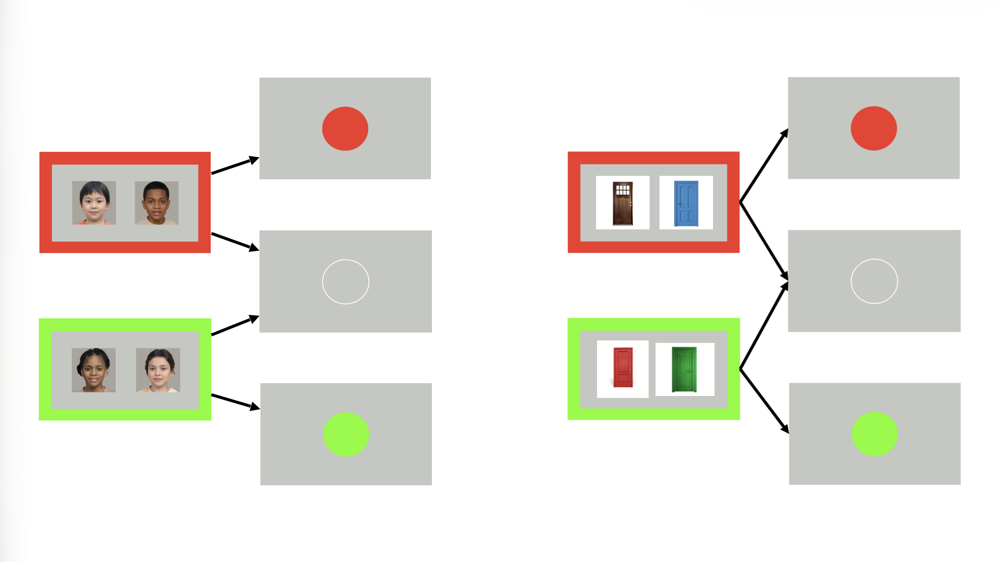
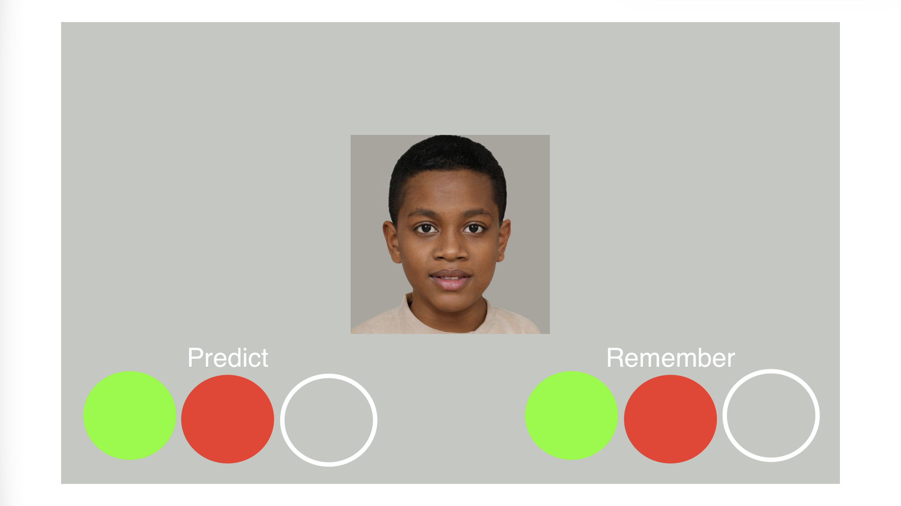

Mothers of children in Project IMPACT, scanned at 3T with multi-shell diffusion, and phenotyped across a broad clinical, developmental, and cognitive battery.


Where a scale has an established clinical cutoff, the sample range and the number past it are shown (n = 42 to 43; questionnaires were not required for the imaging session).
| Measure | Mean ± SD | Range | Clinical cutoff | n past |
|---|---|---|---|---|
| SCAARED, social anxiety | 4.4 ± 3.4 | 0 to 12 | ≥ 7 (social phobia) | 13 / 43 |
| SCAARED, generalized anxiety | 9.0 ± 6.6 | 0 to 25 | ≥ 12 (GAD) | 16 / 43 |
| PSS, perceived stress | 14.6 ± 6.2 | 3 to 26 | ≥ 27 high (descriptive) | 0 / 43 high · 26 moderate |
| CTQ-SF, childhood maltreatment | 42.2 ± 15.9 | 25 to 87 | subscale, mod-severe | 26 / 43 (any) |
| IDAS-II, depression | 39.1 ± 10.7 | 21 to 63 | dimensional, no cutoff | n/a |
| DERS, emotion dysregulation | 71.9 ± 18.7 | 43 to 126 | dimensional, no cutoff | n/a |
| BAS, reward responsiveness | 16.7 ± 2.3 | 10 to 20 | trait, no cutoff | n/a |
| BIS, behavioral inhibition | 20.9 ± 3.6 | 13 to 28 | trait, no cutoff | n/a |
SCAARED cutoffs are from the instrument (total ≥ 23 screens positive: 16 / 43). CTQ-SF uses Bernstein moderate-to-severe cutoffs per subscale; 26 / 43 exceed on at least one (emotional abuse 20, physical neglect 13, sexual abuse 12, physical abuse 11, emotional neglect 11). PSS bands (low 0-13, moderate 14-26, high 27-40) are descriptive, not diagnostic. So: mild-to-moderate anxiety and stress, low depression, and a notably high burden of childhood adversity.
Beyond the memory task and imaging, IMPACT collects a wide phenotype, most of it untouched here and available for future analyses.